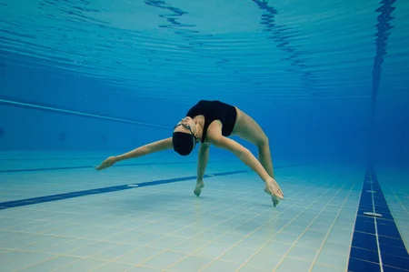

¿Quien soy?
Soy Estefany Contreras Borda, nacida en bogóta Colombia, toda mi infancia y hasta el momento vivo en un barrio a las afueras de Bogotá llamado San Luis via la Calera, desde muy pequeña tuve gran curiosidad por la tecnologia y siempre quise estudiar algo relacionado al internet, gracias a ese sueño de pequeña ya soy tecnica en programación de software y aunque hasta hora estoy enmpezando en esto me siento muy afortunanda de haber escogido esta maravillosa carrera, ha sido un proceso largo lleno de felicidad pero tambien frustracción tristesas y estres, pero con amor y disciplina todo se logra, se que me falta mucahs metas por alcanzar pero reitero con amor todo se puede.
Hobbys
Desde pequeña soy amente al deporte, la recreación y compentecia, a las 8 años empece natacición profesional pero por temas de colegio, horarios y demas, no pude continuar

Tambien entrene futbol, a los 12 años, me gustaba y actualemnte me gusta, a las 18 años entre por curiosidad a patinaje y me quedo gustando, actualemnte entreno fotboll algunos dias entre semana y patinaje.
Me gusta programar y tener retos dificiles, ya que cuando los solucione me produce mucha satisfacción

amante a ir a una iglesia llamada Su Presencia, es de jovenes y instruye demasiado mi vida en todo los aspectos.